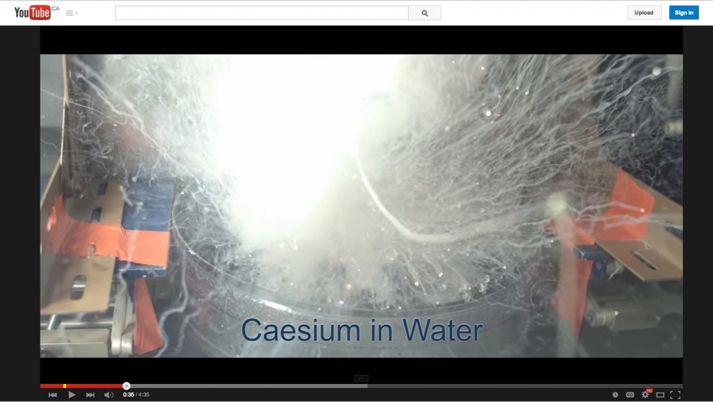
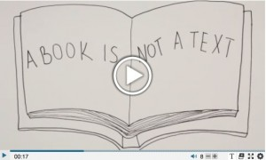
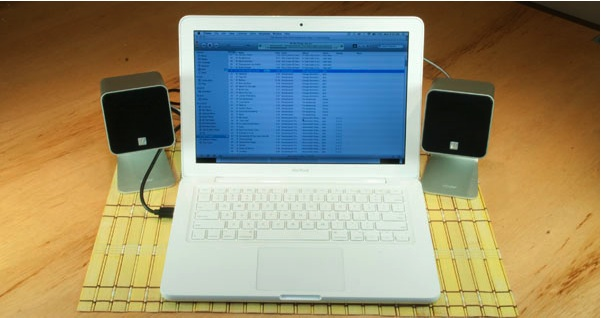
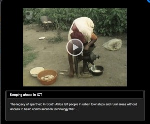
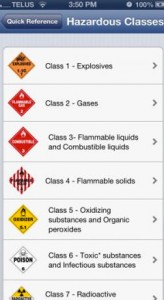
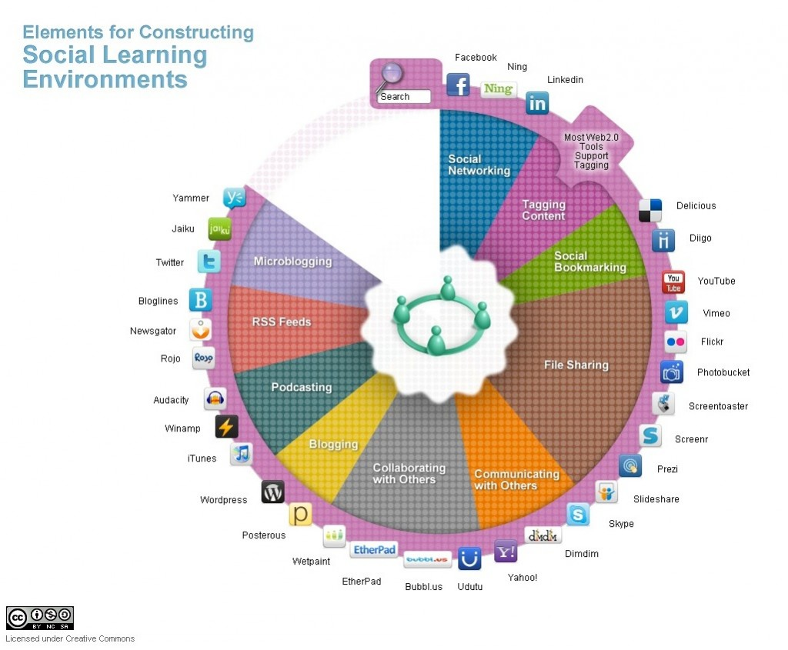
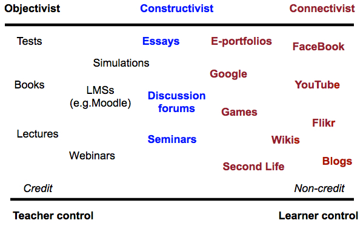

Chapter 7
Teaching in a Digital Age

Also in this chapter you will find the following activities:
In the last chapter, I identified three core dimensions of media and technology along which any technology can be placed. In the next two chapters, I will discuss a method for deciding which media to use when teaching. In this chapter I will focus primarily on the pedagogical differences between media. In the following chapter I will provide a model or set of criteria to use when making decisions about media and technology for teaching.
Embedded within any decision about the use of technology in education and training will be assumptions about the learning process. We have already seen earlier in this book how different epistemological positions and theories of learning affect the design of teaching, and these influences will also determine a teacher’s or an instructor’s choice of appropriate media. Thus, the first step is to decide what and how you want to teach.
This has been covered in depth through Chapters 2-5, but in summary, there are five critical questions that need to be asked about teaching and learning in order to select and use appropriate media/technologies:
These are not questions best asked sequentially, but in a cyclical or iterative manner, as media affordances may suggest alternative teaching methods or even the possibility of learning outcomes that had not been initially considered. When the unique pedagogical characteristics of different media are considered, this may lead to some changes in what content will be covered and what skills will be developed. Therefore, at this stage, decisions on content and learning outcomes should still be tentative.
Different media have different potential or ‘affordances’ for different types of learning. One of the arts of teaching is often finding the best match between media and desired learning outcomes. We explore this relationship throughout this chapter, but first, a summary of the substantial amount of excellent past research on this topic (see, for instance, Trenaman, 1967; Olson and Bruner, 1974; Schramm, 1977; Salomon, 1979, 1981; Clark, 1983; Bates, 1985; Koumi, 2006; Berk, 2009; Mayer, 2009).
This research has indicated that there are three core elements that need to be considered when deciding what media to use:
Olson and Bruner (1974) claim that learning involves two distinct aspects: acquiring knowledge of facts, principles, ideas, concepts, events, relationships, rules and laws; and using or working on that knowledge to develop skills. Again, this is not necessarily a sequential process. Identifying skills then working back to identify the concepts and principles needed to underpin the skills may be another valid way of working. In reality, learning content and skills development will often be integrated in any learning process. Nevertheless, when deciding on technology use, it is useful to make a distinction between content and skills.
Media differ in the extent to which they can represent different kinds of content, because they vary in the symbol systems (text, sound, still pictures, moving images, etc.) that they use to encode information (Salomon, 1979). We saw in the previous chapter that different media are capable of combining different symbol systems. Differences between media in the way they combine symbol systems influence the way in which different media represent content. Thus there is a difference between a direct experience, a written description, a televised recording, and a computer simulation of the same scientific experiment. Different symbol systems are being used, conveying different kinds of information about the same experiment. For instance, our concept of heat can be derived from touch, mathematical symbols (800 celsius), words (random movement of particles), animation, or observance of experiments. Our ‘knowledge’ of heat is as a result not static, but developmental. A large part of learning requires the mental integration of content acquired through different media and symbol systems. For this reason, deeper understanding of a concept or an idea is often the result of the integration of content derived from a variety of media sources (Mayer, 2009).
Media also differ in their ability to handle concrete or abstract knowledge. Abstract knowledge is handled primarily through language. While all media can handle language, either in written or spoken form, media vary in their ability to represent concrete knowledge. For instance, television can show concrete examples of abstract concepts, the video showing the concrete ‘event’, and the sound track analyzing the event in abstract terms. Well-designed media can help learners move from the concrete to the abstract and back again, once more leading to deeper understanding.
Media also differ in the way they structure content. Books, the telephone, radio, podcasts and face-to-face teaching all tend to present content linearly or sequentially. While these media can represent parallel activities (for example, in print, different chapters may deal with events that occur simultaneously but from different perspectives) such activities still have to be presented sequentially. Computers and television are more able to present or simulate the inter-relationship of multiple variables simultaneously occurring. Computers can also handle branching or alternative routes through information, but usually within closely defined limits.
Subject matter varies a great deal in the way in which information needs to be structured. Subject areas (for example, natural sciences, history) structure content in particular ways determined by the internal logic of the subject discipline. This structure may be very tight or logical, requiring particular sequences or relationships between different concepts, or very open or loose, requiring learners to deal with highly complex material in an open-ended or intuitive way.
If media then vary both in the way they present information symbolically and in the way they handle the structures required within different subject areas, media which best match the required mode of presentation and the dominant structure of the subject matter need to be selected. Consequently, different subject areas will require a different balance of media. This means that subject experts should be deeply involved in decisions about the choice and use of media, to ensure that the chosen media appropriately match the presentational and structural requirements of the subject matter.
Media also differ in the extent to which they can help develop different skills. Skills can range from intellectual to psychomotor to affective (emotions, feelings). Koumi (2015) has used Krathwohl’s (2002) revision of Bloom’s Taxonomy of Learning Objectives (1956) to assign affordances of text and video to learning objectives using Krathwold’s classification of learning objectives.
Comprehension is likely to be the minimal level of intellectual learning outcome for most education courses. Some researchers (for example, Marton and Säljö, 1976) make a distinction between surface and deep comprehension. At the highest level of skills comes the application of what one has comprehended to new situations. Here it becomes necessary to develop skills of analysis, evaluation, and problem solving.
Thus a first step is to identify learning objectives or outcomes, in terms of both content and skills, while being aware that the use of some media may result in new possibilities in terms of learning outcomes.
‘Affordances’ is a term originally developed by the psychologist James Gibson (1977) to describe the perceived possibilities of an object in relation to its environment (for example, a door knob suggests to a user that it should be turned or pulled, while a flat plate on a door suggests that it should be pushed.). The term has been appropriated by a number of fields, including instructional design and human-machine interaction.
Thus the pedagogical affordances of a medium relate to the possibilities of using that medium for specific teaching purposes. It should be noted that an affordance depends on the subjective interpretation of the user (in this case a teacher or instructor), and it is often possible to use a medium in ways that are not unique to that medium. For instance video can be used for recording and delivering a lecture. In that sense there is a similarity in at least one affordance for a lecture and a video. Also students may choose not to use a medium in the way intended by the instructor. For instance, Bates and Gallagher (1977) found that some social science students objected to documentary-style television programs requiring application of knowledge or analysis rather than presentation of concepts.
Others (such as myself) have used the term ‘unique characteristics’ of a medium rather than affordances, since ‘unique characteristics’ suggest that there are particular uses of a medium that are less easily replicated by other media, and hence act as a better discriminator in selecting and using media. For instance, using video to demonstrate in slow motion a mechanical process is much more difficult (but not impossible) to replicate in other media. In what follows, my focus is more on unique or particular rather than general affordances of each medium, although the subjective and flexible nature of media interpretation makes it difficult to come to any hard and fast conclusions.
I will now attempt in the next sections to identify some of the unique pedagogical characteristics of the following media:
Technically, face-to-face teaching should also be considered a medium, but I will look specifically at the unique characteristics of face-to-face teaching in Chapter 9, where I discuss modes of delivery.
Before starting on the analysis of different media, it is important to understand my goals in this chapter. I am NOT trying to provide a definitive list of the unique pedagogical characteristics of each medium. Because context is so important and because the science is not strong enough to identify unequivocally such characteristics, I am suggesting in the following sections a way of thinking about the pedagogical affordances of different media. To do this, I will identify what I think are the most important pedagogical characteristics of each medium.
However, individual readers may well come to different conclusions, depending particularly on the subject area in which they are working. The important point is for teachers and instructors to think about what each medium could contribute educationally within their subject area, and that requires a strong understanding of both the needs of their students and the nature of their subject area, as well as the key pedagogical features of each medium.
Bates, A. (1985) Broadcasting in Education: An Evaluation London: Constables
Bates, A. and Gallagher, M. (1977) Improving the Effectiveness of Open University Television Case-Studies and Documentaries Milton Keynes: The Open University (I.E.T. Papers on Broadcasting, No. 77)
Berk, R.A. (2009) Multimedia teaching with video clips: TV, movies, YouTube and mtvU in the college classroom, International Journal of Technology in Teaching and Learning, Vol. 91, No. 5
Bloom, B. S.; Engelhart, M. D.; Furst, E. J.; Hill, W. H.; Krathwohl, D. R. (1956). Taxonomy of educational objectives: The classification of educational goals. Handbook I: Cognitive domain. New York: David McKay Company.
Clark, R. (1983) Reconsidering research on learning from media Review of Educational Research, Vol. 53. No. 4
Gibson, J.J. (1979) The Ecological Approach to Visual Perception Boston: Houghton Mifflin
Koumi, J. (2006) Designing video and multimedia for open and flexible learning. London: Routledge.
Koumi, J. (2015) Learning outcomes afforded by self-assessed, segmented video-print combinations Academia.edu (unpublished to date)
Krathwohl, D.R. (2002) A Revision of Bloom’s Taxonomy: An Overview. In Theory into Practice, Vol. 41, No. 4 College of Education, The Ohio State University. Retrieved from http://www.unco.edu/cetl/sir/stating_outcome/documents/Krathwohl.pdf
Marton, F. and Säljö, R. (1997) Approaches to learning, in Marton, F., Hounsell, D. and Entwistle, N. (eds.) The experience of learning: Edinburgh: Scottish Academic Press (out of press, but available online)
Mayer, R. E. (2009) Multimedia learning (2nd ed). New York: Cambridge University Press
Olson, D. and Bruner, J. (1974) ‘Learning through experience and learning through media’, in Olson, D. (ed.) Media and Symbols: the Forms of Expression Chicago: University of Chicago Press
Salomon, G. (1979) Interaction of Media, Cognition and Learning San Francisco: Jossey-Bass
Salomon, G. (1981) Communication and Education Beverley Hills CA/London: Sage
Schramm, W. (1977) Big Media, Little Media Beverley Hills CA/London: Sage
Trenaman, J. (1967) Communication and Comprehension London: Longmans
Ever since the invention of the Gutenberg press, print has been a dominant teaching technology, arguably at least as influential as the spoken word of the teacher. Even today, textbooks, mainly in printed format, but increasingly also in digital format, still play a major role in formal education, training and distance education. Many fully online courses still make extensive use of text-based learning management systems and online asynchronous discussion forums.
Why is this? What makes text such a powerful teaching medium, and will it remain so, given the latest developments in information technology?
Text can come in many formats, including printed textbooks, text messages, novels, magazines, newspapers, scribbled notes, journal articles, essays, novels, online asynchronous discussions and so on.
The key symbol systems in text are written language (including mathematical symbols) and still graphics, which would include diagrams, tables, and copies of images such as photographs or paintings. Colour is an important attribute for some subject areas, such as chemistry, geography and geology, and art history.
Some of the unique presentational characteristics of text are as follows:
There is some overlap of each of these features with other media, but no other medium combines all these characteristics, or is as powerful as text with respect to these characteristics.
Earlier (Chapter 2, Section 2.7.3) I argued that academic knowledge is a specific form of knowledge that has characteristics that differentiate it from other kinds of knowledge, and particularly from knowledge or beliefs based solely on direct personal experience. Academic knowledge is a second-order form of knowledge that seeks abstractions and generalizations based on reasoning and evidence.
Fundamental components of or criteria for academic knowledge are:
Text meets all four criteria above, so it is an essential medium for academic learning.
Because of text’s ability to handle abstractions, and evidence-based argument, and its suitability for independent analysis and critique, text is particularly useful for developing the higher learning outcomes required at an academic level, such as analysis, critical thinking, and evaluation.
It is less useful for showing processes or developing manual skills, for instance.

Although text can come in many formats, I want to focus particularly on the role of the book, because of its centrality in academic learning. The book has proved to be a remarkably powerful medium for the development and transmission of academic knowledge, since it meets all four of the components required for presenting academic knowledge, but to what extent can new media such as blogs, wikis, multimedia, and social media replace the book in academic knowledge?
New media can in fact handle just as well some of these criteria, and provide indeed added value, such as speed of reproduction and ubiquity, but the book still has some unique qualities. A key advantage of a book is that it allows for the development of a sustained, coherent, and comprehensive argument with evidence to support the argument. Blogs can do this only to a limited extent (otherwise they cease to be blogs and become articles or a digital book).
Quantity is important sometimes and books allow for the collection of a great deal of evidence and supporting argument, and allow for a wider exploration of an issue or theme, within a relatively condensed and portable format. A consistent and well supported argument, with evidence, alternative explanations or even counter positions, requires the extra ‘space’ of a book. Above all, books can provide coherence or a sustained, particular position or approach to a problem or issue, a necessary balance to the chaos and confusion of the many new forms of digital media that constantly compete for our attention, but in much smaller ‘chunks’ that are overall more difficult to integrate and digest.
Another important academic feature of text is that it can be carefully scrutinised, analysed and constantly checked, partly because it is largely linear, and also permanent once published, enabling more rigorous challenge or testing in terms of evidence, rationality, and consistency. Multimedia in recorded format can come close to meeting these criteria, but text can also provide more convenience and in media terms, more simplicity. For instance I repeatedly find analysing video, which incorporates many variables and symbol systems, more complex than analysing a linear text, even if both contain equally rigorous (or equally sloppy) arguments.
Does the form or technological representation of a book matter any more? Is a book still a book if downloaded and read on an iPad or Kindle, rather than as printed text?
For the purposes of knowledge acquisition, it probably isn’t any different. Indeed, for study purposes, a digital version is probably more convenient because carrying an iPad around with maybe hundreds of books downloaded on it is certainly preferable to carrying around the printed versions of the same books. There are still complaints by students about the difficulties of annotating e-books, but this will almost certainly become a standard feature available in the future.
If the whole book is downloaded, then the function of a book doesn’t change much just because it is available digitally. However, there are some subtle changes. Some would argue that scanning is still easier with a printed version. Have you ever had the difficulty of finding a particular quotation in a digital book compared with the printed version? Sure, you can use the search facility, but that means knowing exactly the correct words or the name of the person being quoted. With a printed book, I can often find a quotation just by flicking the pages, because I am using context and rapid eye scanning to locate the source, even when I don’t know exactly what I am looking for. On the other hand, searching when you do know what you are looking for (e.g. a reference by a particular author) is much easier digitally.
When books are digitally available, users can download only the selected chapters that are of interest to them. This is valuable if you know just what you want, but there are also dangers. For instance in my book on the strategic management of technology (Bates and Sangrà, 2011), the last chapter summarizes the rest of the book. If the book had been digital, the temptation then would be to just download the final chapter. You’d have all the important messages in the book, right? Well, no. What you would be missing is the evidence for the conclusions. Now the book on strategic management is based on case studies, so it would be really important to check back with how the case studies were interpreted to get to the conclusions, as this will affect the confidence you would have as a reader in the conclusions that were drawn. If just the digital version of only the last chapter is downloaded, you also lose the context of the whole book. Having the whole book gives readers more freedom to interpret and add their own conclusions than just having a summary chapter.
In conclusion, then, there are advantages and disadvantages of digitizing a book, but the essence of a book is not greatly changed when it becomes digital rather than printed.
We have seen historically that new media often do not entirely replace an older medium, but the old medium finds a new ‘niche’. Thus television did not lead to the complete demise of radio. Similarly, I suspect that there will be a continued role for the book in academic knowledge, enabling the book (whether digital or printed) to thrive alongside new media and formats in academia.
However, books that retain their value academically will likely need to be much more specific in their format and their purpose than has been the case to date. For instance, I see no future for books consisting mainly of a collection of loosely connected but semi-independent chapters from different authors, unless there is a strong cohesion and edited presence that provides an integrated argument or consistent set of data across all the chapters. Most of all, books may need to change some of their features, to allow for more interaction and input from readers, and more links to the outside world. It is much more unlikely though that books will survive in a printed format, because digital publication allows for many more features to be added, reduces the environmental footprint, and makes text much more portable and transferable.
Lastly, this is not an argument for ignoring the academic benefits of new media. The value of graphics, video and animation for representing knowledge, the ability to interact asynchronously with other learners, and the value of social networks, are all under-exploited in academia. But text and books are still important.
For another perspective on this, see Clive Shepherd’s blog: Weighing up the benefits of traditional book publishing.
I have focused particularly on text and academic knowledge, because of the traditional importance of text and printed knowledge in academia. The unique pedagogical characteristics of text though may be less for other forms of knowledge. Indeed, multimedia may have many more advantages in vocational and technical education.
In the k-12 or school sector, text and print are likely to remain important, because reading and writing are likely to remain essential in a digital age, so the study of text (digital and printed) will remain important if only for developing literacy skills.
Indeed, one of the limitations of text is that it requires a high level of prior literacy skills for it to be used effectively for teaching and learning, and indeed much of teaching and learning is focused on the development of skills that enable rigorous analysis of textual materials. We should be giving as much attention to developing multimedia literacy skills though in a digital age.
If text is critical for the presentation of knowledge and development of skills in your subject area, what are the implications for assessment? If students are expected to develop the skills that text appears to develop, then presumably text will be an important medium for assessment. Students will need to demonstrate their own ability to use text to present abstractions, argument and evidence-based reasoning.
In such contexts, composed textual responses, such as essays or written reports, are likely to be necessary, rather than multiple-choice questions or multimedia reports.
Although there has been extensive research on the pedagogical features of other media such as audio, video and computing, text has generally been treated as the default mode, the base against which other media are compared. As a result print in particular is largely taken for granted in academia. We are now though at the stage where we need to pay much more attention to the unique characteristics of text in its various formats, in relation to other media. Until though we have more empirical studies on the unique characteristics of text and print, text will remain central to at least academic teaching and learning.
Although there are many publications on text, in terms of typography, structure, and its historical influence on education and culture, I could find no publications where text is compared with other modern media such as audio or video in terms of its pedagogical characteristics, although Koumi (2015) has written about text in combination with audio, and Albert Manguel’s book is also fascinating reading from an historical perspective.
However, I am sure that my lack of references is due to my lack of scholarship in the area. If you have suggestions for readings, please use the comment box. Also, a study of the unique pedagogical characteristics of text in a digital age might make for a very interesting and valuable Ph.D. thesis.
Koumi, J. (1994) Media comparisons and deployment: a practitioner’s view British Journal of Educational Technology, Vol. 25, No. 1.
Koumi, J. (2006). Designing video and multimedia for open and flexible learning. London: Routledge
Koumi, J. (2015) Learning outcomes afforded by self-assessed, segmented video-print combinations Academia.edu (unpublished)
Manguel, A. (1996) A History of Reading London: Harper Collins

Sounds, such as the noise of certain machinery, or the background hum of daily life, have an associative as well as a pure meaning, which can be used to evoke images or ideas relevant to the main substance of what is being taught. There are, in other words, instances where audio is essential for efficiently mediating certain kinds of information.
Durbridge, 1984
We have seen that oral communication has a long history, and continues today in classroom teaching and in general radio programming. In this section though I am focusing primarily on recorded audio, which I will argue is a very powerful educational medium when used well.
There has been a good deal of research on the unique pedagogical characteristics of audio. At the UK Open University course teams had to bid for media resources to supplement specially designed printed materials. Because media resources were developed initially by the BBC, and hence were limited and expensive to produce, course teams (in conjunction with their allocated BBC producer) had to specify how radio or television would be used to support learning. In particular, the course teams were asked to identify what teaching functions television and radio would uniquely contribute to the teaching. After allocation and development of a course, samples of the programs were evaluated in terms of how well they met these functions, as well as how the students responded to the programming. In later years, the same approach was used when production moved to audio and video cassettes.
This process of identifying unique roles then evaluating the programs allowed the OU, over a period of several years, to identify which roles or functions were particularly appropriate to different media (Bates, 1985). Koumi (2006), himself a former BBC/OU producer, followed up on this research and identified several more key functions for audio and video. Over a somewhat similar period, Richard Mayer, at the University of California at Santa Barbara, was conducting his own research into the use of multimedia in education (Mayer, 2009).
Although there have been continuous developments of audio technology, from audio-cassettes to Sony Walkman’s to podcasts, the pedagogical characteristics of audio have remained remarkably constant over a fairly long period.
Although audio can be used on its own, it is often used in combination with other media, particularly text. On its own, it can present:
Audio however has been found to be particularly ‘potent’ when combined with text, because it enables students to use both eyes and ears in conjunction. Audio has been found to be especially useful for:
This technique was later further developed by Salman Khan, but using video to combine voice-over (audio) explanation with visual presentation of mathematical symbols, formulae, and solutions.
Because of the ability of the learner to stop and start recorded audio, it has been found to be particularly useful for:
First, some advantages:
In particular, added flexibility and learner control means that students will often learn better from preprepared audio recordings combined with accompanying textual material (such as a web site with slides) than they will from a live classroom lecture.
There are also of course disadvantages of audio:
Increasingly video is now be used to combine audio over images, such as in the Khan Academy, but there are many instances, such as where students are studying from prescribed texts, where recorded audio works better than a video recording.
So let’s hear it for audio!
Bates, A. (1985) Broadcasting in Education: An Evaluation London: Constables (out of print – try a good library)
Bates, A. (2005) Technology, e-Learning and Distance Education London/New York: Routledge
Durbridge, N. (1982) Audio-cassettes in Higher Education Milton Keynes: The Open University (mimeo)
Durbridge, N. (1984) Audio-cassettes, in Bates, A. (ed.) The Role of Technology in Distance Education London/New York: Croom Hill/St Martin’s Press
EDUCAUSE Learning Initiative (2005) Seven things you should know about… podcasting Boulder CO: EDUCAUSE, June
Koumi, J. (2006). Designing video and multimedia for open and flexible learning. London: Routledge.
Mayer, R. E. (2009). Multimedia learning (2nd ed). New York: Cambridge University Press.
Postlethwaite, S. N. (1969) The Audio-Tutorial Approach to Learning Minneapolis: Burgess Publishing Company
Salmon, G. and Edirisingha, P. (2008) Podcasting for Learning in Universities Milton Keynes: Open University Press
Wright, S. and Haines, R, (1981) Audio-tapes for Teaching Science Teaching at a Distance, Vol. 20 (Open University journal now out of print).
Note: Although some of the Open University publications are not available online, hard copies/pdf files should be available from: The Open University International Centre for Distance Learning, which is now part of the Open University Library.

Although there have been massive changes in video technology over the last 25 years, resulting in dramatic reductions in the costs of both creating and distributing video, the unique educational characteristics are largely unaffected. (More recent computer-generated media such as simulations, will be analysed under ‘Computing’, in Section 7.5).
Video is a much richer medium than either text or audio, as in addition to its ability to offer text and sound, it can also offer dynamic or moving pictures. Thus while it can offer all the affordances of audio, and some of text, it also has unique pedagogical characteristics of its own. Once again, there has been considerable research on the use of video in education, and again I will be drawing on research from the Open University (Bates, 1985; 2005; Koumi, 2006) as well as from Mayer (2009).
Click on the links to see examples for many of the characteristics listed below.
Video can be used to:
This usually requires the video to be integrated with student activities. The ability to stop, rewind and replay video becomes crucial for skills development, as student activity usually takes place separately from the actual viewing of the video. This may mean thinking through carefully activities for students related to the use of video.
If video is not used directly for lecturing, research clearly indicates that students generally need to be guided as to what to look for in video, at least initially in their use of video for learning. There are various techniques for relating concrete events with abstract principles, such as through audio narration over the video, using a still frame to highlight the observation, or repeating a small section of the program. Bates and Gallagher (1977) found that using video for developing higher order analysis or evaluation was a teachable skill that needs to be built into the development of a course or program, to get the best results.
Typical uses of video for skills development include:
One factor that makes video powerful for learning is its ability to show the relationship between concrete examples and abstract principles, with usually the sound track relating the abstract principles to concrete events shown in the video (see, for example: Probability for quantum chemistry, UBC). Video is particularly useful for recording events or situations where it would be too difficult, dangerous, expensive or impractical to bring students to such events.
Thus its main strengths are as follows:
It should also be remembered that in addition to the features listed above, video can incorporate many of the features of audio as well.
The main weaknesses of video are:
For these reasons, video is not being used enough in education. When used it is often an afterthought or an ‘extra’, rather than an integral part of the design, or is used merely to replicate a classroom lecture, rather than exploiting the unique characteristics of video.
If video is being used to develop the skills outlined in Section 7.4.3, then it is essential that these skills are assessed and count for grading. Indeed, one possible means of assessment might be to ask students to analyse or interpret a selected video, or even to develop their own media project, using video they themselves have collected or produced, using their own devices.
Bates, A. (1985) Broadcasting in Education: An Evaluation London: Constables (out of print – try a good library)
Bates, A. (2005) Technology, e-Learning and Distance Education London/New York: Routledge
Koumi, J. (2006). Designing video and multimedia for open and flexible learning. London: Routledge.
Mayer, R. E. (2009). Multimedia learning (2nd ed). New York: Cambridge University Press.
See also:
It is debatable whether computing should be considered a medium, but I am using the term broadly, and not in the technical sense of writing code. The Internet in particular is an all-embracing medium that accommodates text, audio, video and computing, as well as providing other elements such as distributed communication and access to educational opportunities. Computing is also still an area that is fast developing, with new products and services emerging all the time. Indeed, I will treat recent developments in social media separately from computing, although technically they are a sub-category. Once again, though, social media contain affordances that are not so prevalent in more conventional computing-based learning environments.
In such a volatile medium, it would be foolish to be dogmatic about unique media characteristics, but once again, the purpose of this chapter is not to provide a definitive analysis, but a way of thinking about technology that will facilitate an instructor’s choice and use of technology. The focus is: what are the pedagogical affordances of computing that are different from those of other media (other than the important fact that it can embrace all the other media characteristics)?
Although there has been a great deal of research into computers in education, there has been less focus on the specifics of its pedagogical media characteristics, although a great deal of interesting research and development has taken place and continues in human-machine interaction and to a lesser extent (in terms of interesting) in artificial intelligence. Thus I am relying more on analysis and experience than research in this section.

Presentation is not really where the educational strength of computing lies. It can represent text and audio reasonably well, and video less well, because of the limited size of the screen (and video often has to share screen space with text), and the bandwidth/pixels/download time required. Screen size can be a real presentational limitation with smaller, mobile devices, although tablets such as the iPad are a major advance in screen quality. The traditional user interface for computing, such as pull-down menus, cursor screen navigation, touch control, and an algorithmic-based filing or storage system, while all very functional, are not intuitive and can be quite restricting from an educational point of view.
However, unlike the other media, computing enables the end user to interact directly with the medium, to the extent that the end user (in education, the student) can add to, change or interact with the content, at least to a certain extent. In this sense, computing comes closer to a complete, if virtual, learning environment.
Thus in presentational terms computing can be used to:
Skills development in a computing environment will once again depend very much on the epistemological approach to teaching. Computing can be used to focus on comprehension and understanding, through a behaviourist approach to computer-based learning. However, the communications element of computing also enables more constructivist approaches, through online student discussion and student-created multimedia work.
Thus computing can be used (uniquely) to:
These skills are in addition to the skills that other media can support within a broader computing environment.
Many teachers and instructors avoid the use of computing because they fear it may be used to replace them, or because they believe it results in a very mechanical approach to teaching and learning. This is not helped by misinformed computer scientists, politicians and industry leaders who argue that computers can replace or reduce the need for humans in teaching. Both viewpoints show a misunderstanding of both the sophistication and complexity of teaching and learning, and the flexibility and advantages that computing can bring to teaching.
So here are some of the advantages of computing as a teaching medium:
On the other hand, the disadvantages of computing are:
The issue around the value of computing as a medium for teaching is less about its pedagogical value and more about control. Because of the complexity of teaching and learning, it is essential that the use of computing for teaching and learning is controlled and managed by educators. As long as teachers and instructors have control, and have the necessary knowledge and training about the pedagogical advantages and limitations of computing, then computing is an essential medium for teaching in a digital age.
There is a tendency to focus assessment in computing on multiple choice questions and ‘correct’ answers. Although this form of assessment has its value in assessing comprehension and for testing a limited range of mechanical procedures, computing also supports a wider range of assessment techniques, from learner-created blogs and wikis to e-portfolios. These more flexible forms of computer-based assessment are more in alignment with measuring the knowledge and skills that many learners will need in a digital age.

Although social media are mainly Internet-based and hence a sub-category of computing, there are enough significant differences between educational social media use and computer-based learning or online collaborative learning to justify treating social media as a separate medium, although of course they are dependent and often fully integrated with other forms of computing. The main difference is in the extent of control over learning that social media offer to learners.
Around 2005, a new range of web tools began to find their way into general use, and increasingly into educational use. These can be loosely described as social media, as they reflect a different culture of web use from the former ‘centre-to-periphery’ push of institutional web sites.
Here are some of the tools and their uses (there are many more possible examples: click on each example for an educational application):
Figure 7.6.2 Examples of social media (adapted from Bates, 2011, p.25)
| Type of tool | Example | Application |
| Blogs | Allows an individual to make regular postings to the web, e.g. a personal diary or an analysis of current events | |
Wikis | UBC’s Math Exam Resources | An “open” collective publication, allowing people to contribute or create a body of information |
| Social networking | A social utility that connects people with friends and others who work, study and interact with them | |
Multi-media archives | Allows end users to access, store, download and share audio recordings, photographs, and videos | |
| Virtual worlds | Second Life | Real-time semi-random connection/ communication with virtual sites and people |
| Multi-player games | Lord of the Rings Online | Enables players to compete or collaborate against each other or a third party/parties represented by the computer, usually in real time |
| Mobile learning | Mobile phones and apps | Enables users to access multiple information formats (voice, text, video, etc.) at any time, any place |
The main feature of social media is that they empower the end user to access, create, disseminate and share information easily in a user-friendly, open environment. Usually the only cost is the time of the end-user. There are often few controls over content, other than those normally imposed by a state or government (such as libel or pornography), or where there are controls, they are imposed by the users themselves. One feature of such tools is to empower the end-user – the learner or customer – to self-access and manage data (such as online banking) and to form personal networks (for example through FaceBook). For these reasons, some have called social media the ‘democratization’ of the web.
In general social media tools are based on very simple software, in that they have relatively few lines of code. As a result, new tools and applications (‘apps’) are constantly emerging, and their use is either free or very low cost. For a good broad overview of the use of social media in education, see Lee and McCoughlin (2011).
The concept of ‘affordances’ is frequently used in discussions of social media. McLoughlin & Lee (2011) identify the following ‘affordances’ associated with social media (although they use the term web 2.0) in general:
However, we need to specify more directly the unique pedagogical characteristics of social media.
Social media enable:
Social media,when well designed within an educational framework, can help with the development of the following skills (click on each to see examples):
Some of the advantages of social media are as follows:
However, many students are not, at least initially, independent learners (see Candy, 1991). Many students come to a learning task without the necessary skills or confidence to study independently from scratch (Moore and Thompson, 1990). They need structured support, structured and selected content, and recognized accreditation. The advent of new tools that give students more control over their learning will not necessarily change their need for a structured educational experience. However, learners can be taught the skills needed to become independent learners (Moore, 1973; Marshall and Rowland, 1993). Social media can make the learning of how to learn much more effective but still only in most cases within an initially structured environment.
The use of social media raises the inevitable issue of quality. How can learners differentiate between reliable, accurate, authoritative information, and inaccurate, biased or unsubstantiated information, if they are encouraged to roam free? What are the implications for expertise and specialist knowledge, when everyone has a view on everything? As Andrew Keen (2007) has commented, ‘we are replacing the tyranny of experts with the tyranny of idiots.’ Not all information is equal, nor are all opinions.
These are key challenges for the digital age, but as well as being part of the problem, social media can also be part of the solution. Teachers can consciously use social media for the development of knowledge management and the responsible use of social media, but the development of such knowledge and skills through the use of social media will need a teacher-supported environment. Many students look for structure and guidance in their learning, and it is the responsibility of teachers to provide it. We therefore need a middle ground between the total authority and control of the teacher, and the complete anarchy of the children roaming free on a desert island in the novel “Lord of the Flies” (Golding, 1954). Social media allow for such a middle ground, but only if as teachers we have a clear pedagogy or educational philosophy to guide our choices and use of the technology.
For more on social media, see Chapter 8, Section 8.
Bates, T. (2011) ‘Understanding Web 2.0 and Its Implications for e-Learning’ in Lee, M. and McCoughlin, C. (eds.) Web 2.0-Based E-Learning Hershey NY: Information Science Reference
Candy, P. (1991) Self-direction for lifelong learning San Francisco: Jossey-Bass
Golding, W. (1954) The Lord of the Flies London: Faber and Faber
Keen, A. (2007) The Cult of the Amateur: How Today’s Internet is Killing our Culture New York/London: Doubleday
Lee, M. and McCoughlin, C. (eds.) Web 2.0-Based E-Learning Hershey NY: Information Science Reference
Marshall, L and Rowland, F. (1993) A Guide to learning independently Buckingham UK: Open University Press
McCoughlin, C. and Lee, M. (2011) ‘Pedagogy 2.0: Critical Challenges and Responses to Web 2.0 and Social Software in Tertiary Teaching’, in Lee, M. and McCoughlin, C. (eds.) Web 2.0-Based E-Learning Hershey NY: Information Science Reference
Moore, M. and Thompson, M. (1990) The Effects of Distance Education: A Summary of the Literature University Park, PA: American Center for Distance Education, Pennsylvania State University
I will now summarise the unique pedagogical characteristics of the different media discussed in this chapter.
Figure 7.7 presents a diagrammatic analysis of various online learning tools. I have arranged them primarily by where they fit along an epistemological continuum of objectivist (black), constructivist (blue) and connectivist (red), but also I have used two other dimensions, teacher control/learner control, and credit/non-credit. Note that this figure also enables traditional teaching modes, such as lectures and seminars, to be included and compared.

Figure 7.7 represents my personal interpretation of the tools, and other teachers or instructors may well re-arrange the diagram differently, depending on their particular applications of these tools. Not all tools or media are represented here (for example, audio and video). The position of any particular tool in the diagram will depend on its actual use. Learning management systems can be used in a constructivist way, and blogs can be very teacher-controlled, if the teacher is the only one permitted to use a blog on a course. However, the aim here is not to provide a cast-iron categorization of educational media, but to provide a framework for teachers in deciding which tools and media are most likely to suit a particular teaching approach. Indeed, other teachers may prefer a different set of pedagogical values as a framework for analysis of the different media and technologies.
However, to give an example from Figure 7.7, a teacher may use an LMS to organize a set of resources, guidelines, procedures and deadlines for students, who then may use several of the social media, such as photos from mobile phones to collect data. The teacher provides a space and structure on the LMS for students’ learning materials in the form of an e-portfolio, to which students can load their work. Students in small groups can use discussion forums or FaceBook to work on projects together.
The example above is in the framework of a course for credit, but the framework would also fit the non-institutional or informal approach to the use of social media for learning, with a focus on tools such as FaceBook, blogs and YouTube. These applications would be much more learner driven, with the learner deciding on the tools and their uses. The most powerful examples are connectivist or cMOOCs, as we saw in Chapter 5.
Teaching in a Digital Age: Guidelines for designing teaching and learning by Dr. Tony Bates (CC BY-NC).
Photos: reproduced from the original open textbook (each figure is credited in its caption).
Design: HTML template based on work by HTML5 UP.
{kind=link}
{kind=link}
{kind=link}
{kind=link}